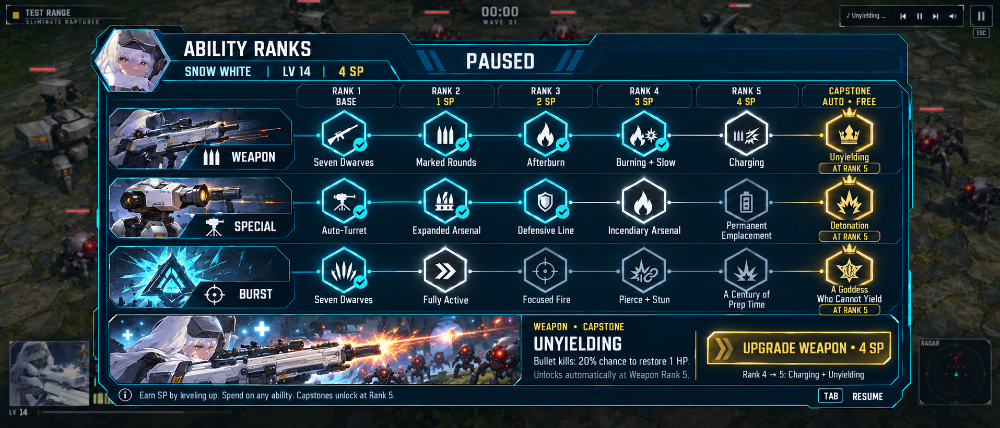

Plan the build. See the capstone.
The complete Weapon, Special, and Burst roadmap stays visible. Each track ends with its named automatic capstone, and every rank shows its cost. View the new variation matching the current HUD →

A clear destination
Unyielding, Detonation, and A Goddess Who Cannot Yield each have a distinct endpoint. Every capstone can be inspected from the start. Reaching its ability’s Rank 5 grants it for free.
Fewer decisions, room to grow
Four purchases cost 10 SP per ability in this proposal. At one SP per level, a focused build can reach its first capstone at level 11; finishing every track takes level 31. Costs are a playtest starting point.
Keep the combat incentive
The mockup retains XP-earned skill points. A sortie-completion SP bonus could supplement enemy XP later, but replacing combat progression is still an open design question. No sortie gate is implied by this screen.
Visual proposal only. The revised art separates the capstones from Rank 5’s ordinary effects: Charging, Permanent Emplacement, and A Century of Prep Time. Rank 5 and its capstone unlock together. The live test-range menu and gameplay rules are unchanged.